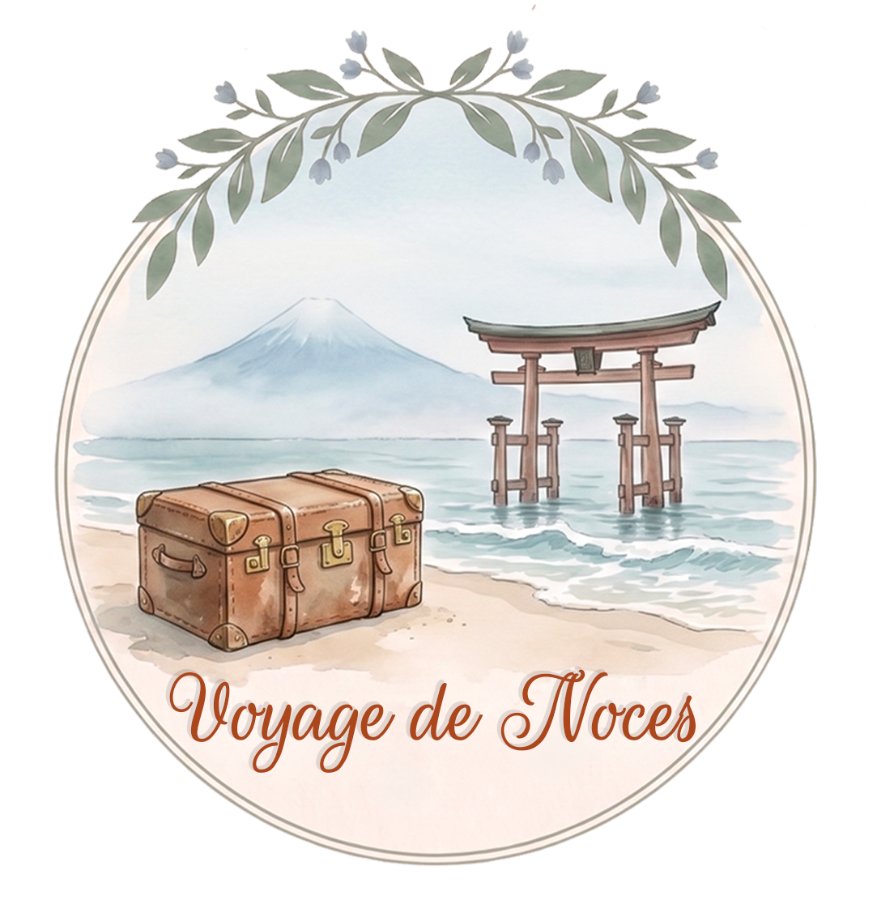

Après notre mariage, nous partons pour le Japon — un rêve partagé depuis longtemps. Temples millénaires, jardins de cerisiers, cuisine raffinée… Des instants gravés pour toujours.
Si vous souhaitez contribuer à ce voyage de rêve, vous pouvez participer à notre cagnotte. Chaque geste nous touchera profondément 🌸
🌸 Contribuer à la cagnotte